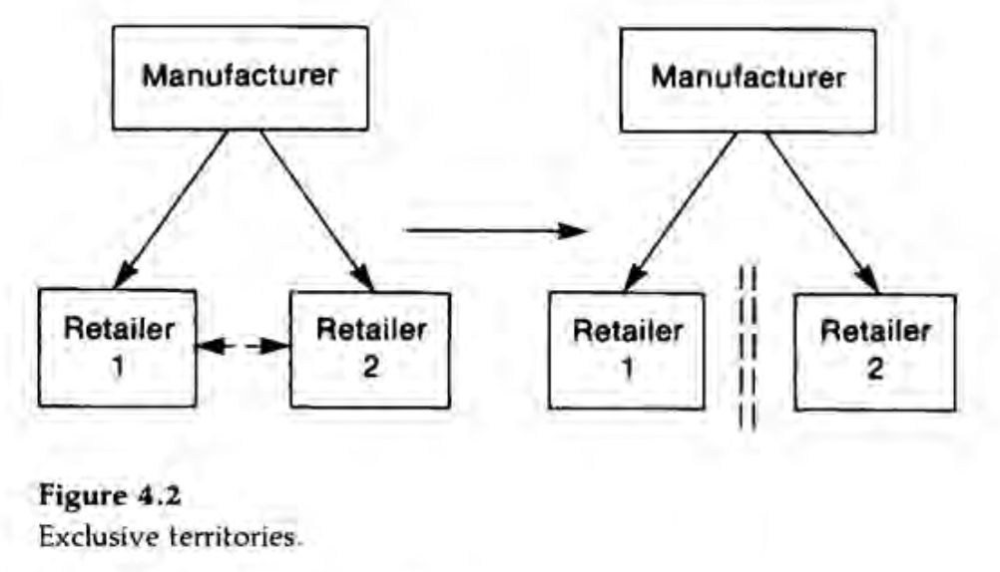

2 4.1 Linear Prices versus Vertical Restraints
2.1 4.1.1 Basic Framework
- A single supplier, called the monopolist or the manufacturer, produces an intermediate good at a constant unit cost \(c\).
- He is the only producer of this good.
- He sells it to a single downstream firm, called the retailer.
- The retailer resells the product.
- \(p_{w}\) denotes the wholesale price and \(p\) the consumer price.
- \(q\) denotes the quantity bought by the retailer; it also denotes the final consumption if the retailer does not throw away any of the intermediate good.
- The consumers’ demand function is denoted \(q = D(p)\).
2.1.1 Common Forms of Contracting
- A linear price is a contract specifying only a payment, \(T(q) = p_{w}q\) from the retailer to the manufacturer.
- A franchise fee, \(A\), gives rise to the simplest example of a nonlinear price. The retailer then pays \(T(q) = A + p_{w}q\)
- Resale-price maintenance (RPM) is a provision in the contract dectating the choice of the final price, \(p\), to the retailer. Variants of this restraint are a price ceiling (\(p \leq \overline{p}\)) and a price floor (\(p \geq \underline{p}\)).
- Quantity fixing specifies the amount, \(q\) to be bought by the retailer. Variants of this restraint are quantity forcing (\(q \geq \underline{q}\)) and quantity rationing (\(q \leq \overline{q}\))
2.2 4.1.2 Intrabrand Competition
- Introduce the possibility of competition among several retailers on the same market.
- New type of restraint: exclusive territories

2.3 4.1.3 Several Inputs
- Now assume that the downstream unit uses several inputs to produce the final good.
- The downstream unit can be a producer, or can be a retailer who sells complementary products to the customer.
- A new restraint: tie in, in which one of the input suppliers forces the downstream unit to purchase the other inputs from him.
- The manufacturer can also impose a payment, called a royalty, proportional to the number of units sold downstream.